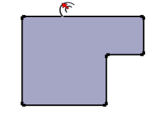

Offset
Tool
Create copies of lines at a uniform distance from originals.
Tool Operation
Click on a face.
Move cursor.
Click to finish offset operation.
Esc = Cancel operation.
Modifier Keys
None.
Advanced Operations
Offsetting Lines
Repeating an Offset Operation
Specifying Precise Offset Values